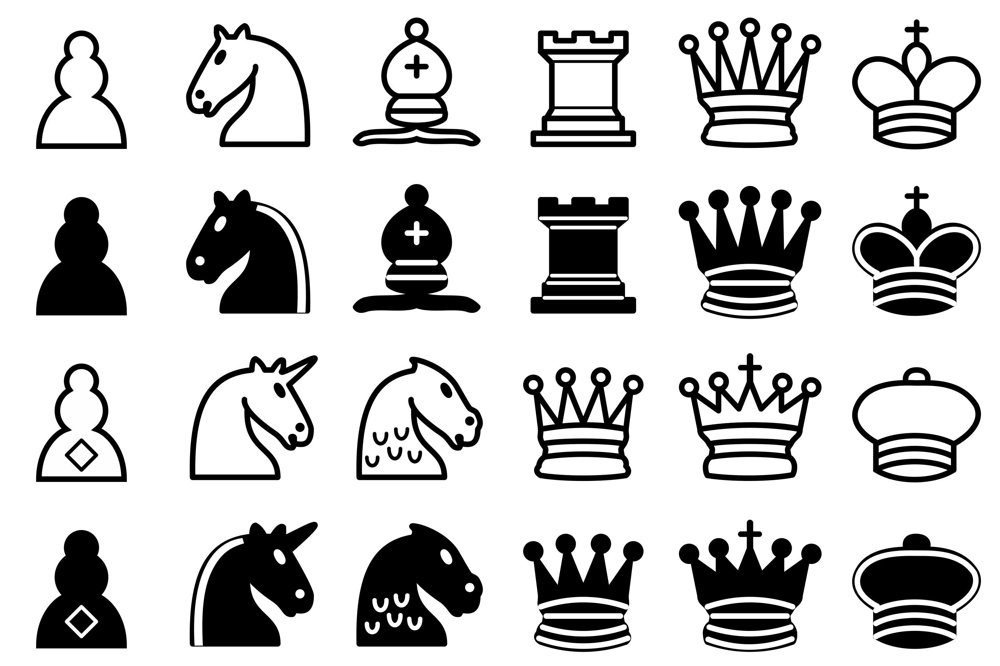

The Chess variant 3 Man Chess is played on a mobius strip. Specifically, rooks, bishops and queens move as though they were on a mobius strip with 24 spaces along the edge and 13 spaces across, except they are not allowed to land on the central ring of 12. This demonstrates how to see the starting layout as though it was a mobius strip.
WASD to rotate
